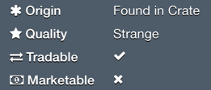

Suitcase
An iOS inventory viewer for Steam games
All games…

Supports Steam itself and all games that provide inventory information via Steam’s Web API. Currently these inventories are supported:
- Steam
- BattleBlocks Theater
- Counter-Strike: Global Offensive
- Dota 2 (including Test version)
- Portal 2
- Sins of a Dark Age
- Super Monday Night Combat
- Team Fortress 2 (including Beta version)
- Warframe
… all items…
Get a quick overview about all items in an inventory. All items will be displayed with their name and an icon as known from the games.
Additionally, you can see the quality of an item with a quick glance at the (optional) colored bar left to its icon.2
Swiping down will show the search bar which can be used to search through all items in an inventory by name.
Sort items by:
- Position in the inventory
- Item name
- Type of the item
- Origin2
- Item quality2
… all information




Get detailed information on every aspect of an item. See which type an item is and where it was obtained from, read its full description and all of its attributes.
Additionally, you will find the following useful information:
-
Item sets
See which item set, if any, an item belongs to and which other items (including images) belong to that set.
-
“Kill eater” ranks2
Some items have a rank that increases with kills or other actions completed with this item.
-
Equipped items3
Which class can equip an item? And which one actually has it equipped at the moment?